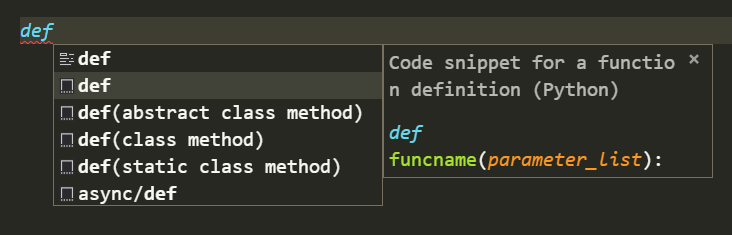

VSCode中添加提示选择快捷键
背景
在VSCode中，在输入一些字符后，会自动给出一些智能提示，如果想要的提示不是在第一个位置的话，需要使用键盘的上下箭头进行选择，增加了手臂的移动距离，非常不方便，这里通过修改VSCode中的快捷键解决这个问题
修改方法
打开VSCode中的快捷键设置（过程略），增加如下快捷键
1 | { |
效果
在编写Python代码时，需要经常创建函数，输入def后，第一提示并不是我们想要的代码片段，以前需要使用键盘下箭头移动到第二个提示上去，将快捷键修改后，只需要按下Ctrl+k就可以选择到第二个提示，方便快捷，好用~
